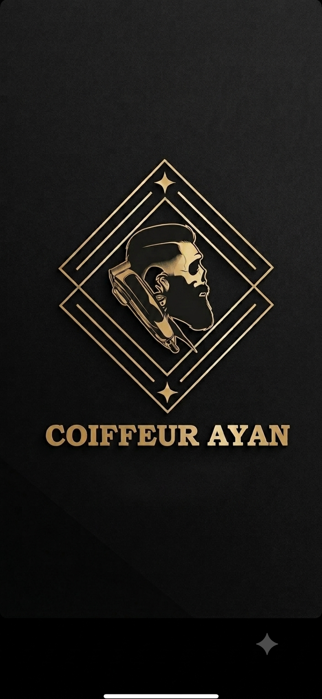

Barbier · Herrensalon · Handwerk
Präziser Schnitt, gepflegter Bart, klare Linien. Bei Coiffeur Ayan trifft klassisches Barbier-Handwerk auf modernen Stil – mit Ruhe, Sorgfalt und einem Auge fürs Detail.
Beratung, Waschen, Schnitt und Styling.
Heisse Tücher, klassische Rasur, präzise Konturen.
Die komplette Behandlung – Haar und Bart in einem Termin.
Geduldig und entspannt, bis 12 Jahre.
Termine nach Vereinbarung – am besten kurz anrufen oder vorbeikommen.
Musterstrasse 1, 8000 Musterstadt · +41 00 000 00 00